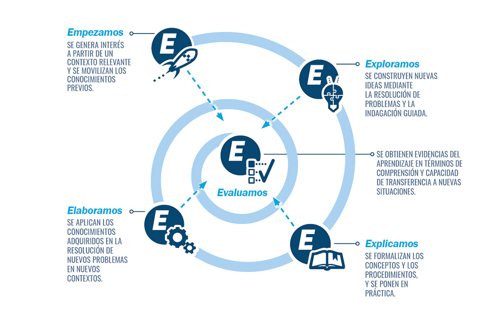

0. Introducción: la dimensión meta-didáctica de estas dos sesiones
Como docentes experimentados, diseñáis continuamente situaciones de aprendizaje para vuestro alumnado: secuencias de actividades, proyectos ABP, tareas complejas, … A lo largo de vuestra trayectoria profesional, habéis desarrollado un conocimiento didáctico valioso, muchas veces implícito, sobre qué funciona en el aula, cómo secuenciar contenidos, cuándo proporcionar apoyos y cómo evaluar procesos complejos. Sin embargo, no siempre resulta sencillo sistematizar y explicitar ese conocimiento bajo un marco coherente que integre los elementos que la investigación educativa (manifiesto) ha identificado como esenciales para el aprendizaje profundo: contextualización, andamiaje metacognitivo, evaluación formadora, criterios explícitos, trabajo con modelos y, más recientemente, integración ética de la inteligencia artificial generativa como asistente en el diseño didáctico.
Estas dos sesiones formativas tienen una peculiaridad: son en sí mismas un REA que muestra cómo diseñar REAs. Esta dimensión meta-didáctica es pedagógicamente intencionada: vais a experimentar como estudiantes la misma estructura, las mismas fases, los mismos andamiajes y las mismas estrategias de evaluación formadora que, luego, podréis diseñar para vuestro alumnado.
En concreto, estas 6 horas presenciales estarán estructuradas según el modelo de secuencia didáctica en 6 fases adoptado por los Recursos Educativos Abiertos (REA) de Andalucía, inspirado en el ciclo de aprendizaje experiencial de Kolb (1984) y en el Modelo 5E (muy próximo a las 6 fases del REA) propuesto por Bybee (1997, 2022).
{kind=link}
{kind=link}
{kind=link}
_comp.jpg){kind=link}
{kind=link}

Como documenta García Pérez (2022), la adaptación de la Consejería de Educación amplía el ciclo original de Kolb añadiendo dos fases previas (Motivar y Activar) y una fase final metacognitiva (Concluir), creando así un modelo de seis momentos secuenciales e interdependientes fundamentado en la psicología cognitiva:
- Motivar: conectar con la experiencia real, generar interés, explicitar objetivos y criterios.
- Activar: recuperar saberes previos pertinentes que actúan como anclaje cognitivo.
- Explorar (“exploraciones concretas” de Kolb): investigar, descubrir, trabajar sobre situaciones significativas con los conocimientos que ya se poseen.
- Estructurar (“observación reflexiva” y “conceptualización abstracta” de Kolb): sistematizar, formalizar, conceptualizar los nuevos aprendizajes con andamiajes explícitos.
- Aplicar (“experimentación activa” de Kolb): transferir lo aprendido a nuevas situaciones, construir el producto final de forma secuenciada.
- Concluir: sintetizar, reflexionar metacognitivamente, autoevaluar el proceso y proyectar aprendizajes futuros.
Así pues, mi propuesta para estas dos sesiones es que diseñéis un borrador de situación de aprendizaje completa que integre los elementos pedagógicos esenciales que aparecen representados visualmente en la portada de este REA: metacognición (toma de conciencia sobre el propio proceso de aprendizaje), andamiaje educativo (apoyos temporales que facilitan la autonomía progresiva), listas de cotejo (criterios de realización para la autorregulación), feedback (retroalimentación formativa continua), evaluación formadora (donde el alumno se apropia de los criterios y autorregula su aprendizaje) y, transversalmente, integración funcional de IA generativa como asistente en la planificación didáctica.
{kind=link}
{kind=link}